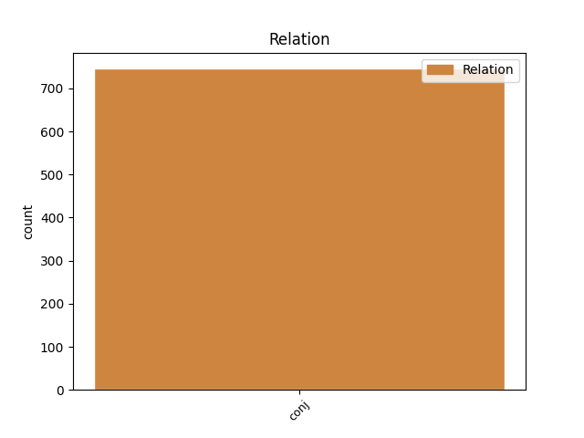
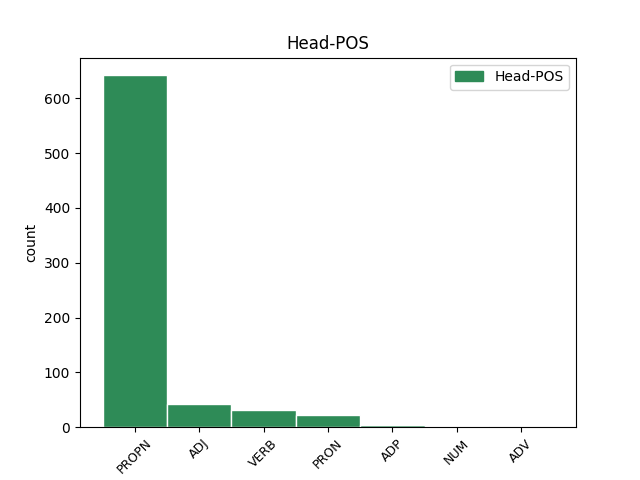
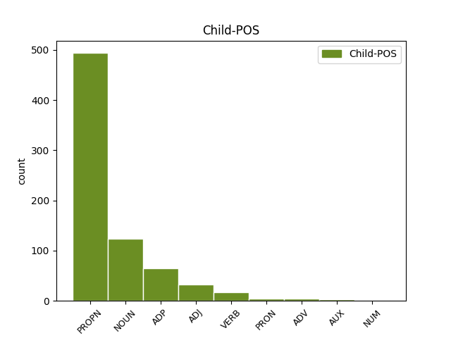

Distribution of features within this leaf



Agreement Rules sorted by frequency.
- When the dependent token is the conjunct(conj) of the head token, and the head token is PROPN
1 صدر _ _ _ _ 0 _ _ _
2 پردیش _ _ _ _ 0 _ _ _
3 کانگریس _ _ _ _ 0 _ _ _
4 کمیٹی _ _ _ _ 0 _ _ _
5 مسٹر _ _ _ _ 0 _ _ _
6 ڈی _ _ _ _ 0 _ _ _
7 سرینواس _ _ _ _ 0 _ _ _
8 کی _ _ _ _ 0 _ _ _
9 جانب _ _ _ _ 0 _ _ _
10 سے _ _ _ _ 0 _ _ _
11 جگن جگن PROPN NNP Case=Acc|Gender=Masc|Number=Sing|Person=3 0 _ _ _
12 اور _ _ _ _ 0 _ _ _
13 بی _ _ _ _ 0 _ _ _
14 جے _ _ _ _ 0 _ _ _
15 پی پی PROPN NNP Case=Acc|Gender=Masc|Number=Sing|Person=3 11 conj _ ChunkId=NP3|ChunkType=head|Tam=0|Vib=0
16 مےں _ _ _ _ 0 _ _ _
17 خفیہ _ _ _ _ 0 _ _ _
18 اتحاد _ _ _ _ 0 _ _ _
19 ہونے _ _ _ _ 0 _ _ _
20 اور _ _ _ _ 0 _ _ _
21 جگن _ _ _ _ 0 _ _ _
22 کو _ _ _ _ 0 _ _ _
23 دینے _ _ _ _ 0 _ _ _
24 والا _ _ _ _ 0 _ _ _
25 ووٹ _ _ _ _ 0 _ _ _
26 بی _ _ _ _ 0 _ _ _
27 جے _ _ _ _ 0 _ _ _
28 پی _ _ _ _ 0 _ _ _
29 کو _ _ _ _ 0 _ _ _
30 پڑنے _ _ _ _ 0 _ _ _
31 جیسے _ _ _ _ 0 _ _ _
32 ریمارکس _ _ _ _ 0 _ _ _
33 کو _ _ _ _ 0 _ _ _
34 تکلیف_دہ _ _ _ _ 0 _ _ _
35 قرار _ _ _ _ 0 _ _ _
36 دیتے _ _ _ _ 0 _ _ _
37 ہوئے _ _ _ _ 0 _ _ _
38 کہا _ _ _ _ 0 _ _ _
39 کہ _ _ _ _ 0 _ _ _
40 جگن _ _ _ _ 0 _ _ _
41 موہن _ _ _ _ 0 _ _ _
42 ریڈی _ _ _ _ 0 _ _ _
43 نے _ _ _ _ 0 _ _ _
44 پہلے _ _ _ _ 0 _ _ _
45 ہی _ _ _ _ 0 _ _ _
46 بی _ _ _ _ 0 _ _ _
47 جے _ _ _ _ 0 _ _ _
48 پی _ _ _ _ 0 _ _ _
49 سے _ _ _ _ 0 _ _ _
50 اتحاد _ _ _ _ 0 _ _ _
51 نہ _ _ _ _ 0 _ _ _
52 کرنے _ _ _ _ 0 _ _ _
53 اپنی _ _ _ _ 0 _ _ _
54 جماعت _ _ _ _ 0 _ _ _
55 سیکولر _ _ _ _ 0 _ _ _
56 ہونے _ _ _ _ 0 _ _ _
57 کا _ _ _ _ 0 _ _ _
58 اعلان _ _ _ _ 0 _ _ _
59 کیا _ _ _ _ 0 _ _ _
60 ہے _ _ _ _ 0 _ _ _
61 ۔ _ _ _ _ 0 _ _ _
1 ورلڈ _ _ _ _ 0 _ _ _
2 کپ _ _ _ _ 0 _ _ _
3 کے _ _ _ _ 0 _ _ _
4 بعد _ _ _ _ 0 _ _ _
5 پاکستانی _ _ _ _ 0 _ _ _
6 ٹیم _ _ _ _ 0 _ _ _
7 مےں _ _ _ _ 0 _ _ _
8 چند _ _ _ _ 0 _ _ _
9 اہم اہم ADJ JJ Case=Nom 0 _ _ _
10 اور _ _ _ _ 0 _ _ _
11 بڑی _ _ _ _ 0 _ _ _
12 تبدیلیاں تبدیلی NOUN NN Case=Nom|Gender=Masc|Number=Plur|Person=3 9 conj _ ChunkId=NP3|ChunkType=head|Tam=0|Vib=0
13 کی _ _ _ _ 0 _ _ _
14 گئی _ _ _ _ 0 _ _ _
15 ہےں _ _ _ _ 0 _ _ _
16 لہذا _ _ _ _ 0 _ _ _
17 کل _ _ _ _ 0 _ _ _
18 یہاں _ _ _ _ 0 _ _ _
19 کھیلے _ _ _ _ 0 _ _ _
20 جانے _ _ _ _ 0 _ _ _
21 والے _ _ _ _ 0 _ _ _
22 ٹور _ _ _ _ 0 _ _ _
23 کے _ _ _ _ 0 _ _ _
24 واحد _ _ _ _ 0 _ _ _
25 ٹوئنٹی _ _ _ _ 0 _ _ _
26 20 _ _ _ _ 0 _ _ _
27 مقابلے _ _ _ _ 0 _ _ _
28 مےں _ _ _ _ 0 _ _ _
29 پاکستان _ _ _ _ 0 _ _ _
30 کو _ _ _ _ 0 _ _ _
31 فاسٹ _ _ _ _ 0 _ _ _
32 بولر _ _ _ _ 0 _ _ _
33 عمر _ _ _ _ 0 _ _ _
34 گل _ _ _ _ 0 _ _ _
35 کی _ _ _ _ 0 _ _ _
36 خدمات _ _ _ _ 0 _ _ _
37 اور _ _ _ _ 0 _ _ _
38 آل_راؤنڈر _ _ _ _ 0 _ _ _
39 عبدالرزاق _ _ _ _ 0 _ _ _
40 بھی _ _ _ _ 0 _ _ _
41 دستیاب _ _ _ _ 0 _ _ _
42 نہیں _ _ _ _ 0 _ _ _
43 ہوںگے _ _ _ _ 0 _ _ _
44 جبکہ _ _ _ _ 0 _ _ _
45 وکٹ _ _ _ _ 0 _ _ _
46 کیپنگ _ _ _ _ 0 _ _ _
47 کی _ _ _ _ 0 _ _ _
48 ذمہ_داری _ _ _ _ 0 _ _ _
49 محمد _ _ _ _ 0 _ _ _
50 سلمان _ _ _ _ 0 _ _ _
51 نبھا _ _ _ _ 0 _ _ _
52 رہے _ _ _ _ 0 _ _ _
53 ہیں _ _ _ _ 0 _ _ _
54 ۔ _ _ _ _ 0 _ _ _
1 اس _ _ _ _ 0 _ _ _
2 بل _ _ _ _ 0 _ _ _
3 میں _ _ _ _ 0 _ _ _
4 اس _ _ _ _ 0 _ _ _
5 بات _ _ _ _ 0 _ _ _
6 کا _ _ _ _ 0 _ _ _
7 بھی _ _ _ _ 0 _ _ _
8 اختیار _ _ _ _ 0 _ _ _
9 دیا _ _ _ _ 0 _ _ _
10 گیا _ _ _ _ 0 _ _ _
11 ہے _ _ _ _ 0 _ _ _
12 کہ _ _ _ _ 0 _ _ _
13 پاکستان _ _ _ _ 0 _ _ _
14 کو _ _ _ _ 0 _ _ _
15 القاعدہ _ _ _ _ 0 _ _ _
16 کو _ _ _ _ 0 _ _ _
17 شکست _ _ _ _ 0 _ _ _
18 دینے _ _ _ _ 0 _ _ _
19 اور _ _ _ _ 0 _ _ _
20 تخریب_کار _ _ _ _ 0 _ _ _
21 عناصر _ _ _ _ 0 _ _ _
22 سے _ _ _ _ 0 _ _ _
23 نمٹنے _ _ _ _ 0 _ _ _
24 کے _ _ _ _ 0 _ _ _
25 لیے _ _ _ _ 0 _ _ _
26 فوجی _ _ _ _ 0 _ _ _
27 امداد _ _ _ _ 0 _ _ _
28 بھی _ _ _ _ 0 _ _ _
29 فراہم _ _ _ _ 0 _ _ _
30 کی _ _ _ _ 0 _ _ _
31 جائے _ _ _ _ 0 _ _ _
32 اور _ _ _ _ 0 _ _ _
33 اس _ _ _ _ 0 _ _ _
34 امداد _ _ _ _ 0 _ _ _
35 کا _ _ _ _ 0 _ _ _
36 بیشتر _ _ _ _ 0 _ _ _
37 حصہ _ _ _ _ 0 _ _ _
38 تخریب_کاری _ _ _ _ 0 _ _ _
39 سے _ _ _ _ 0 _ _ _
40 نمٹنے نمٹ VERB VM Case=Acc|VerbForm=Inf 0 _ _ _
41 اور _ _ _ _ 0 _ _ _
42 دہشت_گردی _ _ _ _ 0 _ _ _
43 کے _ _ _ _ 0 _ _ _
44 خاتمہ خاتمہ NOUN NN Case=Acc|Gender=Masc|Number=Sing|Person=3 40 conj _ ChunkId=NP14|ChunkType=head|Tam=0|Vib=0
45 پر _ _ _ _ 0 _ _ _
46 صرف _ _ _ _ 0 _ _ _
47 کی _ _ _ _ 0 _ _ _
48 جائے _ _ _ _ 0 _ _ _
49 ۔ _ _ _ _ 0 _ _ _
1 آخر _ _ _ _ 0 _ _ _
2 مےں _ _ _ _ 0 _ _ _
3 مولانا _ _ _ _ 0 _ _ _
4 عزیز _ _ _ _ 0 _ _ _
5 الدین _ _ _ _ 0 _ _ _
6 عمری _ _ _ _ 0 _ _ _
7 نے _ _ _ _ 0 _ _ _
8 اختتامی _ _ _ _ 0 _ _ _
9 کلمات _ _ _ _ 0 _ _ _
10 ادا _ _ _ _ 0 _ _ _
11 کرتے _ _ _ _ 0 _ _ _
12 ہوئے _ _ _ _ 0 _ _ _
13 بتایا _ _ _ _ 0 _ _ _
14 کہ _ _ _ _ 0 _ _ _
15 اسلام _ _ _ _ 0 _ _ _
16 مےں _ _ _ _ 0 _ _ _
17 جس جو PRON PRP Case=Acc|Number=Sing|Person=3|PronType=Prs 0 _ _ _
18 اخوت اخوت NOUN NN Case=Acc|Gender=Masc|Number=Sing|Person=3 17 conj _ ChunkId=NP7|ChunkType=head|Tam=0|Vib=0
19 و _ _ _ _ 0 _ _ _
20 بھائی_چارگی _ _ _ _ 0 _ _ _
21 کا _ _ _ _ 0 _ _ _
22 درس _ _ _ _ 0 _ _ _
23 ملتا _ _ _ _ 0 _ _ _
24 ہے _ _ _ _ 0 _ _ _
25 وہ _ _ _ _ 0 _ _ _
26 مےں _ _ _ _ 0 _ _ _
27 نے _ _ _ _ 0 _ _ _
28 الحمدللہ _ _ _ _ 0 _ _ _
29 جماعت _ _ _ _ 0 _ _ _
30 اسلامی _ _ _ _ 0 _ _ _
31 مےں _ _ _ _ 0 _ _ _
32 پایا _ _ _ _ 0 _ _ _
33 ہے _ _ _ _ 0 _ _ _
34 ۔ _ _ _ _ 0 _ _ _
1 ریاستی _ _ _ _ 0 _ _ _
2 چینی _ _ _ _ 0 _ _ _
3 امور _ _ _ _ 0 _ _ _
4 کے _ _ _ _ 0 _ _ _
5 مشیر _ _ _ _ 0 _ _ _
6 چانک _ _ _ _ 0 _ _ _
7 کو _ _ _ _ 0 _ _ _
8 یون _ _ _ _ 0 _ _ _
9 نے _ _ _ _ 0 _ _ _
10 کہا _ _ _ _ 0 _ _ _
11 کہ _ _ _ _ 0 _ _ _
12 جن _ _ _ _ 0 _ _ _
13 علاقوں _ _ _ _ 0 _ _ _
14 کو _ _ _ _ 0 _ _ _
15 امداد _ _ _ _ 0 _ _ _
16 دی _ _ _ _ 0 _ _ _
17 گئی _ _ _ _ 0 _ _ _
18 ہے _ _ _ _ 0 _ _ _
19 ان _ _ _ _ 0 _ _ _
20 میں _ _ _ _ 0 _ _ _
21 نوجوانوں _ _ _ _ 0 _ _ _
22 کے _ _ _ _ 0 _ _ _
23 مسائل _ _ _ _ 0 _ _ _
24 کا _ _ _ _ 0 _ _ _
25 استحصال _ _ _ _ 0 _ _ _
26 ۔ _ _ _ _ 0 _ _ _
27 غریب _ _ _ _ 0 _ _ _
28 خاندانوں _ _ _ _ 0 _ _ _
29 اور _ _ _ _ 0 _ _ _
30 واحد _ _ _ _ 0 _ _ _
31 ماؤں _ _ _ _ 0 _ _ _
32 کی کا ADP PSP AdpType=Post|Case=Nom|Gender=Fem|Number=Sing 0 _ _ _
33 فلاح _ _ _ _ 0 _ _ _
34 و _ _ _ _ 0 _ _ _
35 بہبود _ _ _ _ 0 _ _ _
36 کے _ _ _ _ 0 _ _ _
37 لیے _ _ _ _ 0 _ _ _
38 امداد امداد NOUN NN Case=Nom|Gender=Masc|Number=Plur|Person=3 32 conj _ ChunkId=NP14|ChunkType=head|SpaceAfter=No|Tam=0|Vib=0
39 ۔ _ _ _ _ 0 _ _ _
40 پنجابی _ _ _ _ 0 _ _ _
41 زبان _ _ _ _ 0 _ _ _
42 کی _ _ _ _ 0 _ _ _
43 تعلیم _ _ _ _ 0 _ _ _
44 میں _ _ _ _ 0 _ _ _
45 مدد _ _ _ _ 0 _ _ _
46 ، _ _ _ _ 0 _ _ _
47 اسپورٹس _ _ _ _ 0 _ _ _
48 کی _ _ _ _ 0 _ _ _
49 ترقی _ _ _ _ 0 _ _ _
50 اور _ _ _ _ 0 _ _ _
51 گردوارہ _ _ _ _ 0 _ _ _
52 صاحب _ _ _ _ 0 _ _ _
53 کے _ _ _ _ 0 _ _ _
54 لیے _ _ _ _ 0 _ _ _
55 اراضی _ _ _ _ 0 _ _ _
56 مختص _ _ _ _ 0 _ _ _
57 کرنا _ _ _ _ 0 _ _ _
58 شامل _ _ _ _ 0 _ _ _
59 ہیں _ _ _ _ 0 _ _ _
60 ۔ _ _ _ _ 0 _ _ _
1 عدالت _ _ _ _ 0 _ _ _
2 نے _ _ _ _ 0 _ _ _
3 حکومت _ _ _ _ 0 _ _ _
4 سے _ _ _ _ 0 _ _ _
5 دو _ _ _ _ 0 _ _ _
6 مرتبہ _ _ _ _ 0 _ _ _
7 کہا _ _ _ _ 0 _ _ _
8 تھا _ _ _ _ 0 _ _ _
9 کہ _ _ _ _ 0 _ _ _
10 وہ _ _ _ _ 0 _ _ _
11 آئی _ _ _ _ 0 _ _ _
12 پی _ _ _ _ 0 _ _ _
13 ایس _ _ _ _ 0 _ _ _
14 عہدیداروں _ _ _ _ 0 _ _ _
15 پی _ _ _ _ 0 _ _ _
16 پی _ _ _ _ 0 _ _ _
17 پانڈے _ _ _ _ 0 _ _ _
18 , _ _ _ _ 0 _ _ _
19 جی _ _ _ _ 0 _ _ _
20 ایل _ _ _ _ 0 _ _ _
21 سنگھال _ _ _ _ 0 _ _ _
22 اور _ _ _ _ 0 _ _ _
23 ترون _ _ _ _ 0 _ _ _
24 بروت _ _ _ _ 0 _ _ _
25 کا _ _ _ _ 0 _ _ _
26 تبادلہ _ _ _ _ 0 _ _ _
27 کر _ _ _ _ 0 _ _ _
28 دیں _ _ _ _ 0 _ _ _
29 جو _ _ _ _ 0 _ _ _
30 ممبئی _ _ _ _ 0 _ _ _
31 کی _ _ _ _ 0 _ _ _
32 مسلم _ _ _ _ 0 _ _ _
33 لڑکی _ _ _ _ 0 _ _ _
34 عشرت _ _ _ _ 0 _ _ _
35 جہاں _ _ _ _ 0 _ _ _
36 اور _ _ _ _ 0 _ _ _
37 دیگر _ _ _ _ 0 _ _ _
38 تین تین NUM QC Case=Acc|NumType=Card 0 _ _ _
39 کے کا ADP PSP AdpType=Post|Case=Acc|Gender=Masc|Number=Sing 38 conj _ ChunkId=NP14|ChunkType=child
40 انکاؤنٹر _ _ _ _ 0 _ _ _
41 مےں _ _ _ _ 0 _ _ _
42 ملوث _ _ _ _ 0 _ _ _
43 تھے _ _ _ _ 0 _ _ _
44 ۔ _ _ _ _ 0 _ _ _
Disagree Examples:
1 آل _ _ _ _ 0 _ _ _
2 انڈیا _ _ _ _ 0 _ _ _
3 مسلم _ _ _ _ 0 _ _ _
4 پرسنل _ _ _ _ 0 _ _ _
5 لا _ _ _ _ 0 _ _ _
6 بورڈ _ _ _ _ 0 _ _ _
7 نے _ _ _ _ 0 _ _ _
8 اب _ _ _ _ 0 _ _ _
9 تک _ _ _ _ 0 _ _ _
10 چار _ _ _ _ 0 _ _ _
11 اپیلیں _ _ _ _ 0 _ _ _
12 اترپردیش _ _ _ _ 0 _ _ _
13 سنی _ _ _ _ 0 _ _ _
14 وقف _ _ _ _ 0 _ _ _
15 بورڈ _ _ _ _ 0 _ _ _
16 , _ _ _ _ 0 _ _ _
17 محمد _ _ _ _ 0 _ _ _
18 ہاشم _ _ _ _ 0 _ _ _
19 انصاری انصاری PROPN NNP Case=Acc|Gender=Masc|Number=Sing|Person=3 0 _ _ _
20 اور _ _ _ _ 0 _ _ _
21 مصباح _ _ _ _ 0 _ _ _
22 الدین الدین PROPN NNPC Case=Nom|Gender=Masc|Number=Sing|Person=3 19 conj _ ChunkId=NP6|ChunkType=head|Tam=0|Vib=0
23 کی _ _ _ _ 0 _ _ _
24 جانب _ _ _ _ 0 _ _ _
25 سے _ _ _ _ 0 _ _ _
26 داخل _ _ _ _ 0 _ _ _
27 کروائی _ _ _ _ 0 _ _ _
28 ہےں _ _ _ _ 0 _ _ _
29 اور _ _ _ _ 0 _ _ _
30 مزید _ _ _ _ 0 _ _ _
31 چار _ _ _ _ 0 _ _ _
32 اپیلیں _ _ _ _ 0 _ _ _
33 داخل _ _ _ _ 0 _ _ _
34 کروانا _ _ _ _ 0 _ _ _
35 پیش _ _ _ _ 0 _ _ _
36 نظر _ _ _ _ 0 _ _ _
37 ہے _ _ _ _ 0 _ _ _
38 ۔ _ _ _ _ 0 _ _ _
1 آل _ _ _ _ 0 _ _ _
2 انڈیا _ _ _ _ 0 _ _ _
3 مسلم _ _ _ _ 0 _ _ _
4 پرسنل _ _ _ _ 0 _ _ _
5 لا _ _ _ _ 0 _ _ _
6 بورڈ _ _ _ _ 0 _ _ _
7 نے _ _ _ _ 0 _ _ _
8 اب _ _ _ _ 0 _ _ _
9 تک _ _ _ _ 0 _ _ _
10 چار _ _ _ _ 0 _ _ _
11 اپیلیں _ _ _ _ 0 _ _ _
12 اترپردیش _ _ _ _ 0 _ _ _
13 سنی _ _ _ _ 0 _ _ _
14 وقف _ _ _ _ 0 _ _ _
15 بورڈ _ _ _ _ 0 _ _ _
16 , _ _ _ _ 0 _ _ _
17 محمد _ _ _ _ 0 _ _ _
18 ہاشم _ _ _ _ 0 _ _ _
19 انصاری _ _ _ _ 0 _ _ _
20 اور _ _ _ _ 0 _ _ _
21 مصباح _ _ _ _ 0 _ _ _
22 الدین الدین PROPN NNPC Case=Nom|Gender=Masc|Number=Sing|Person=3 0 _ _ _
23 کی کا ADP PSP AdpType=Post|Case=Acc|Gender=Fem|Number=Sing 22 conj _ ChunkId=NP6|ChunkType=child
24 جانب _ _ _ _ 0 _ _ _
25 سے _ _ _ _ 0 _ _ _
26 داخل _ _ _ _ 0 _ _ _
27 کروائی _ _ _ _ 0 _ _ _
28 ہےں _ _ _ _ 0 _ _ _
29 اور _ _ _ _ 0 _ _ _
30 مزید _ _ _ _ 0 _ _ _
31 چار _ _ _ _ 0 _ _ _
32 اپیلیں _ _ _ _ 0 _ _ _
33 داخل _ _ _ _ 0 _ _ _
34 کروانا _ _ _ _ 0 _ _ _
35 پیش _ _ _ _ 0 _ _ _
36 نظر _ _ _ _ 0 _ _ _
37 ہے _ _ _ _ 0 _ _ _
38 ۔ _ _ _ _ 0 _ _ _
1 مسٹر _ _ _ _ 0 _ _ _
2 بالا _ _ _ _ 0 _ _ _
3 کرشنا _ _ _ _ 0 _ _ _
4 نے _ _ _ _ 0 _ _ _
5 دونوں _ _ _ _ 0 _ _ _
6 خاندانوں _ _ _ _ 0 _ _ _
7 مےں _ _ _ _ 0 _ _ _
8 اختلافات _ _ _ _ 0 _ _ _
9 کی _ _ _ _ 0 _ _ _
10 تردید _ _ _ _ 0 _ _ _
11 اےک _ _ _ _ 0 _ _ _
12 ایسے _ _ _ _ 0 _ _ _
13 وقت _ _ _ _ 0 _ _ _
14 کی _ _ _ _ 0 _ _ _
15 ہے _ _ _ _ 0 _ _ _
16 جبکہ _ _ _ _ 0 _ _ _
17 اس _ _ _ _ 0 _ _ _
18 سوال _ _ _ _ 0 _ _ _
19 پر _ _ _ _ 0 _ _ _
20 این _ _ _ _ 0 _ _ _
21 ٹی _ _ _ _ 0 _ _ _
22 آر آر PROPN NNP Case=Acc|Gender=Masc|Number=Sing|Person=3 0 _ _ _
23 اور _ _ _ _ 0 _ _ _
24 نائیڈو _ _ _ _ 0 _ _ _
25 خاندانوں _ _ _ _ 0 _ _ _
26 کے _ _ _ _ 0 _ _ _
27 درمیان درمیان ADP NST AdpType=Post|Case=Nom|Gender=Masc|Number=Sing|Person=3 22 conj _ AltTag=ADP-NOUN|ChunkId=NP9|ChunkType=child
28 اس _ _ _ _ 0 _ _ _
29 مسئلہ _ _ _ _ 0 _ _ _
30 پر _ _ _ _ 0 _ _ _
31 سرد _ _ _ _ 0 _ _ _
32 جنگ _ _ _ _ 0 _ _ _
33 جاری _ _ _ _ 0 _ _ _
34 ہے _ _ _ _ 0 _ _ _
35 کہ _ _ _ _ 0 _ _ _
36 خاندان _ _ _ _ 0 _ _ _
37 کا _ _ _ _ 0 _ _ _
38 نیا _ _ _ _ 0 _ _ _
39 جانشین _ _ _ _ 0 _ _ _
40 کس _ _ _ _ 0 _ _ _
41 کو _ _ _ _ 0 _ _ _
42 بنایا _ _ _ _ 0 _ _ _
43 جائے _ _ _ _ 0 _ _ _
44 ۔ _ _ _ _ 0 _ _ _
1 دوردرشن _ _ _ _ 0 _ _ _
2 کیندر _ _ _ _ 0 _ _ _
3 حیدرآباد _ _ _ _ 0 _ _ _
4 جمعہ _ _ _ _ 0 _ _ _
5 22 _ _ _ _ 0 _ _ _
6 اپریل _ _ _ _ 0 _ _ _
7 کو _ _ _ _ 0 _ _ _
8 شام _ _ _ _ 0 _ _ _
9 چھ _ _ _ _ 0 _ _ _
10 بجے _ _ _ _ 0 _ _ _
11 اور _ _ _ _ 0 _ _ _
12 دوبارہ _ _ _ _ 0 _ _ _
13 رات _ _ _ _ 0 _ _ _
14 12 _ _ _ _ 0 _ _ _
15 بجے _ _ _ _ 0 _ _ _
16 اردو _ _ _ _ 0 _ _ _
17 پروگرام _ _ _ _ 0 _ _ _
18 انجمن _ _ _ _ 0 _ _ _
19 مےں _ _ _ _ 0 _ _ _
20 مشہور _ _ _ _ 0 _ _ _
21 و _ _ _ _ 0 _ _ _
22 معروف _ _ _ _ 0 _ _ _
23 پاکستانی _ _ _ _ 0 _ _ _
24 ٹی _ _ _ _ 0 _ _ _
25 وی _ _ _ _ 0 _ _ _
26 اور _ _ _ _ 0 _ _ _
27 تھیٹر _ _ _ _ 0 _ _ _
28 کی کا ADP PSP AdpType=Post|Case=Nom|Gender=Fem|Number=Sing 0 _ _ _
29 اداکارہ اداکارہ NOUN NN Case=Acc|Gender=Fem|Number=Sing|Person=3 28 conj _ ChunkId=NP8|ChunkType=head|Tam=0|Vib=0
30 و _ _ _ _ 0 _ _ _
31 ہدایت_کار _ _ _ _ 0 _ _ _
32 ڈاکٹر _ _ _ _ 0 _ _ _
33 مدیحہ _ _ _ _ 0 _ _ _
34 گوہر _ _ _ _ 0 _ _ _
35 سے _ _ _ _ 0 _ _ _
36 مشہور _ _ _ _ 0 _ _ _
37 تھیٹر _ _ _ _ 0 _ _ _
38 شخصیت _ _ _ _ 0 _ _ _
39 جناب _ _ _ _ 0 _ _ _
40 محمد _ _ _ _ 0 _ _ _
41 علی _ _ _ _ 0 _ _ _
42 بیگ _ _ _ _ 0 _ _ _
43 کی _ _ _ _ 0 _ _ _
44 بات_چیت _ _ _ _ 0 _ _ _
45 ٹیلی_کاسٹ _ _ _ _ 0 _ _ _
46 کرےگا _ _ _ _ 0 _ _ _
47 ۔ _ _ _ _ 0 _ _ _
1 سائبر _ _ _ _ 0 _ _ _
2 آباد _ _ _ _ 0 _ _ _
3 پولیس _ _ _ _ 0 _ _ _
4 نے _ _ _ _ 0 _ _ _
5 دو _ _ _ _ 0 _ _ _
6 بین_ریاستی بین_ریاستی ADJ JJ Case=Acc 0 _ _ _
7 اور _ _ _ _ 0 _ _ _
8 بین_ضلعی _ _ _ _ 0 _ _ _
9 سارقوں _ _ _ _ 0 _ _ _
10 کی کا ADP PSP AdpType=Post|Case=Nom|Gender=Fem|Number=Sing 6 conj _ ChunkId=NP3|ChunkType=child
11 ٹولیوں _ _ _ _ 0 _ _ _
12 کو _ _ _ _ 0 _ _ _
13 گرفتار _ _ _ _ 0 _ _ _
14 کرتے _ _ _ _ 0 _ _ _
15 ہوئے _ _ _ _ 0 _ _ _
16 دیڑھ _ _ _ _ 0 _ _ _
17 کیلو _ _ _ _ 0 _ _ _
18 سونا _ _ _ _ 0 _ _ _
19 5 _ _ _ _ 0 _ _ _
20 کیلو _ _ _ _ 0 _ _ _
21 چاندی _ _ _ _ 0 _ _ _
22 , _ _ _ _ 0 _ _ _
23 لیاپ_ٹاپ _ _ _ _ 0 _ _ _
24 اور _ _ _ _ 0 _ _ _
25 الیکٹرانک _ _ _ _ 0 _ _ _
26 اشیا۶ _ _ _ _ 0 _ _ _
27 کو _ _ _ _ 0 _ _ _
28 ضبط _ _ _ _ 0 _ _ _
29 کر _ _ _ _ 0 _ _ _
30 لیا _ _ _ _ 0 _ _ _
31 جن _ _ _ _ 0 _ _ _
32 کی _ _ _ _ 0 _ _ _
33 مالیت _ _ _ _ 0 _ _ _
34 35 _ _ _ _ 0 _ _ _
35 لاکھ _ _ _ _ 0 _ _ _
36 سے _ _ _ _ 0 _ _ _
37 زائد _ _ _ _ 0 _ _ _
38 بتائی _ _ _ _ 0 _ _ _
39 گئی _ _ _ _ 0 _ _ _
40 ہے _ _ _ _ 0 _ _ _
41 ۔ _ _ _ _ 0 _ _ _